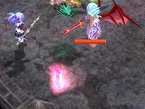

目次 > ゲームについて > 日本Falcom 攻略 > ZWEI II > ボス戦 > テルミドール
らんの眼
ZWEI II (ツヴァイ 2、ZWEI II Plus)
| 概要 | 情報 | 攻略チャート |
| フード交換 | ペットについて | ボス戦 |
| 敵キャラ一覧 | ハンターランク | G-コロッセオ |
| アイテム一覧 | ガジェット一覧 | トレジャー一覧 |
| ダンジョン一覧 | クリアデータ特典 | Plusの追加要素 |
| ZWEI II攻略へ | 目次へ戻る |
| テルミドール 前半 |
| ラグナ・アルウェンどちらでも対処可能です。どんな方法でもいいので、テルミドールに攻撃を加えてください。 ある程度のダメージを与えると、たまに地上に落ちて気絶するときがあります。こうなると、一方的に攻撃できるチャンスですが、どういう条件で気絶するかがよく分かりません。 攻撃としては、半月型の衝撃波の連発があります。これは、スピードが速く連発してくるので、テルミドールとの距離よりも立ち回りが重要になります。  もう一つ、紫の剣を飛ばしての攻撃があります。剣をよけること自体は簡単ですが、この剣は地面に刺さった後も、しばらくの間は触れるとダメージを受けるので、移動の邪魔になります。 上の2つの攻撃は、使う前に何かしらのかけ声があるので、音を聞いての対処が可能です。 そして、もう一つ。「とどめ!」のかけ声と共に、テルミドール周辺の広い範囲に衝撃波を放つ攻撃があります。「とどめ!」の声を聞いたら、取りあえずテルミドールから離れた方がいいです。 |
| テルミドール 後半 |
| ある程度ダメージを与えると、攻撃パターンが増えます。 その一つがこの竜巻です。テルミドールの正面に立っていなければ、驚異ではありません。 次に、一番恐ろしい凍結攻撃です。テルミドールが青白く発光し始めたら、素早く本体を攻撃して動きを止めてください。 そうしないと、回避不能の凍結攻撃を食らい、その後しばらくの間、一方的に攻撃を食らい続けてしまいます。 |
| 概要 | 情報 | 攻略チャート |
| フード交換 | ペットについて | ボス戦 |
| 敵キャラ一覧 | ハンターランク | G-コロッセオ |
| アイテム一覧 | ガジェット一覧 | トレジャー一覧 |
| ダンジョン一覧 | クリアデータ特典 | Plusの追加要素 |
| ページの上部へ | ZWEI II 攻略へ | 目次へ戻る |